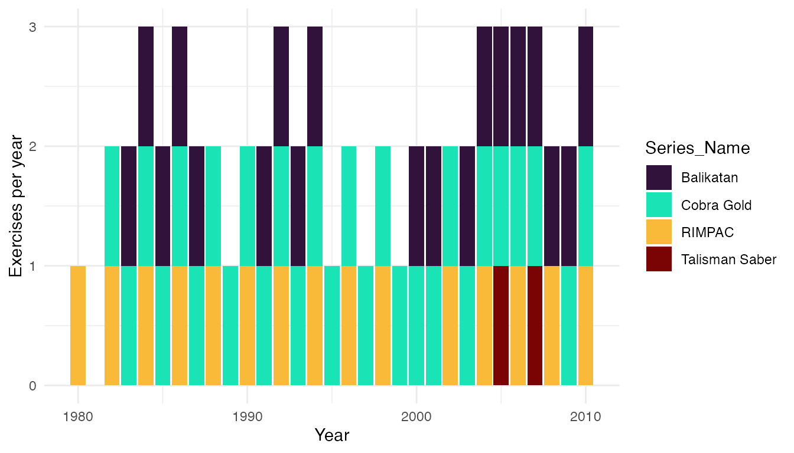

This page provides an overview for the get_exercises()
function, the latest addition to the troopdata package.
The function returns a customized data frame of exercise-country-year
observations drawn from the Multinational Military Exercises (MME)
dataset (D’Orazio and Galambos 2021), reshaped into long format so each
row represents a single participating country in a single year of a
single exercise.
First things first—let’s load the troopdata package along with a few helpers we’ll use for plotting and wrangling.
The underlying data object is mme_long, and
get_exercises() exposes a series of filter arguments that
let users subset the data by participating country, year, exercise
duration, geographic location, exercise name, the domain of the exercise
(e.g., air, land, sea), the mission focus (warfighting, humanitarian,
peacekeeping), and the number of participating countries.
Basic usage
Called with no arguments, get_exercises() returns the
full long-format exercise-country-year dataset across the entire
temporal coverage of the underlying MME data.
example <- get_exercises()
head(example)
#> # A tibble: 6 × 30
#> MMEID Ex_Name Series_Name gwcode country year Location lat lon StartDate
#> <chr> <chr> <chr> <dbl> <chr> <dbl> <chr> <dbl> <dbl> <chr>
#> 1 mme100 Deterr… Deterrent … 20 Canada 1980 central… 34.6 18.0 5/16/80
#> 2 mme100 Deterr… Deterrent … 260 Federa… 1980 central… 34.6 18.0 5/16/80
#> 3 mme100 Deterr… Deterrent … 325 Italy 1980 central… 34.6 18.0 5/16/80
#> 4 mme100 Deterr… Deterrent … 210 Nether… 1980 central… 34.6 18.0 5/16/80
#> 5 mme100 Deterr… Deterrent … 640 Turkey 1980 central… 34.6 18.0 5/16/80
#> 6 mme100 Deterr… Deterrent … 200 United… 1980 central… 34.6 18.0 5/16/80
#> # ℹ 20 more variables: s.year <dbl>, s.month <dbl>, s.day <chr>, EndDate <chr>,
#> # e.year <dbl>, e.month <dbl>, e.day <chr>, CPX <dbl>, Air <dbl>, Land <dbl>,
#> # Sea <dbl>, Amphibious <dbl>, Cyber <dbl>, Warfighting <dbl>,
#> # Peacekeeping <dbl>, Humanitarian <dbl>, FocusDescription <chr>,
#> # AdditionalParticipantInfo <chr>, participant_count <int>, duration <dbl>Each row identifies a single participating country in a single year
of a single exercise. The MMEID column uniquely identifies
each exercise, Ex_Name gives the name of the individual
exercise, and Series_Name identifies the broader series the
exercise belongs to (e.g., “Cobra Gold 23” is part of the “Cobra Gold”
series).
Filtering by country
The country argument accepts either a numeric vector of
Gleditsch and Ward (G&W) country codes or a character vector of
country names. Numeric input is matched exactly against the
gwcode column; character input is matched against the
country column using a case-insensitive grepl
fuzzy match, so partial names are accepted.
For example, using a numeric vector of G&W codes:
# Pull exercises that include Japan (740) and Australia (900)
example.gw <- get_exercises(country = c(740, 900))
head(example.gw)
#> # A tibble: 6 × 30
#> MMEID Ex_Name Series_Name gwcode country year Location lat lon StartDate
#> <chr> <chr> <chr> <dbl> <chr> <dbl> <chr> <dbl> <dbl> <chr>
#> 1 mme1… RIMPAC… RIMPAC 900 Austra… 1992 Pacific… 35.0 -116. 6/19/92
#> 2 mme1… RIMPAC… RIMPAC 740 Japan 1992 Pacific… 35.0 -116. 6/19/92
#> 3 mme1… Major … Major Adex 900 Austra… 1992 malaysi… 4.21 102. 9/22/92
#> 4 mme1… Starfi… Starfish 900 Austra… 1992 South C… 2.79 104. 9/7/92
#> 5 mme1… Aces N… NA 900 Austra… 1992 Austral… -12.4 131. 10/19/92
#> 6 mme1… Suman … Suman Warr… 900 Austra… 1992 Burnham… -43.6 172. 10/19/92
#> # ℹ 20 more variables: s.year <dbl>, s.month <dbl>, s.day <chr>, EndDate <chr>,
#> # e.year <dbl>, e.month <dbl>, e.day <chr>, CPX <dbl>, Air <dbl>, Land <dbl>,
#> # Sea <dbl>, Amphibious <dbl>, Cyber <dbl>, Warfighting <dbl>,
#> # Peacekeeping <dbl>, Humanitarian <dbl>, FocusDescription <chr>,
#> # AdditionalParticipantInfo <chr>, participant_count <int>, duration <dbl>Or a character vector. Because the country filter is a fuzzy match,
the string "korea" will return participation rows for both
North and South Korea:
example.korea <- get_exercises(country = "korea")
unique(example.korea$country)
#> [1] "South Korea" "North Korea"This is intentional—users who need to distinguish between similarly-named countries should either pass the exact G&W code or post-filter the returned data frame.
Filtering by year
The startyear and endyear arguments subset
the data to a specific temporal range. If a year falls outside the
available range of the underlying MME data, the function issues a
warning and sets the value to the nearest available year rather than
failing.
example.years <- get_exercises(country = "korea",
startyear = 2000,
endyear = 2010)
head(example.years)
#> # A tibble: 6 × 30
#> MMEID Ex_Name Series_Name gwcode country year Location lat lon StartDate
#> <chr> <chr> <chr> <dbl> <chr> <dbl> <chr> <dbl> <dbl> <chr>
#> 1 mme18… -9 NA 732 South … 2000 Kyonggi… 37.4 128. 2000-02-…
#> 2 mme18… -9 NA 732 South … 2000 Sea of … 38.8 135 2000-04-…
#> 3 mme18… RSOI 2… RSOI 732 South … 2000 South K… 35.9 128. 2000-04-…
#> 4 mme19… Ulchi … UFL 732 South … 2000 South K… 35.9 128. 8/21/00
#> 5 mme19… Foal E… FE 732 South … 2000 South K… 35.9 128. 10/25/00
#> 6 mme19… Pacifi… Pacific Re… 732 South … 2000 South C… 15.5 114. 10/2/00
#> # ℹ 20 more variables: s.year <dbl>, s.month <dbl>, s.day <chr>, EndDate <chr>,
#> # e.year <dbl>, e.month <dbl>, e.day <chr>, CPX <dbl>, Air <dbl>, Land <dbl>,
#> # Sea <dbl>, Amphibious <dbl>, Cyber <dbl>, Warfighting <dbl>,
#> # Peacekeeping <dbl>, Humanitarian <dbl>, FocusDescription <chr>,
#> # AdditionalParticipantInfo <chr>, participant_count <int>, duration <dbl>Filtering by exercise name
The exercise_name argument matches against both the
Ex_Name and Series_Name columns using a
case-insensitive grepl fuzzy match. This lets users target
either an individual exercise (e.g., "Cobra Gold 23") or
the entire exercise series ("cobra gold").
cobra_gold <- get_exercises(exercise_name = "cobra gold")
head(cobra_gold)
#> # A tibble: 6 × 30
#> MMEID Ex_Name Series_Name gwcode country year Location lat lon StartDate
#> <chr> <chr> <chr> <dbl> <chr> <dbl> <chr> <dbl> <dbl> <chr>
#> 1 mme10… Cobra … Cobra Gold 800 Thaila… 1993 Thailan… 12.7 101. 5/3/93
#> 2 mme10… Cobra … Cobra Gold 2 United… 1993 Thailan… 12.7 101. 5/3/93
#> 3 mme11… Cobra … Cobra Gold 800 Thaila… 1994 Thailan… 13.4 101. 5/9/94
#> 4 mme11… Cobra … Cobra Gold 2 United… 1994 Thailan… 13.4 101. 5/9/94
#> 5 mme12… Cobra … Cobra Gold 800 Thaila… 1995 Thailan… 15.0 102. 5/1/95
#> 6 mme12… Cobra … Cobra Gold 2 United… 1995 Thailan… 15.0 102. 5/1/95
#> # ℹ 20 more variables: s.year <dbl>, s.month <dbl>, s.day <chr>, EndDate <chr>,
#> # e.year <dbl>, e.month <dbl>, e.day <chr>, CPX <dbl>, Air <dbl>, Land <dbl>,
#> # Sea <dbl>, Amphibious <dbl>, Cyber <dbl>, Warfighting <dbl>,
#> # Peacekeeping <dbl>, Humanitarian <dbl>, FocusDescription <chr>,
#> # AdditionalParticipantInfo <chr>, participant_count <int>, duration <dbl>Users can also supply multiple exercise names and the function will return matches to the specified strings:
multi.ex <- get_exercises(exercise_name = c("cobra gold", "balikatan"))
unique(multi.ex$Series_Name)
#> [1] "Balikatan" "Cobra Gold"Filtering by location
The location argument applies the same fuzzy-matching
logic to the free-text Location column. This is useful for
pulling out exercises held in a particular country, sub-region, or named
training area.
thailand.ex <- get_exercises(location = "thailand")
head(thailand.ex)
#> # A tibble: 6 × 30
#> MMEID Ex_Name Series_Name gwcode country year Location lat lon StartDate
#> <chr> <chr> <chr> <dbl> <chr> <dbl> <chr> <dbl> <dbl> <chr>
#> 1 mme10… Cobra … Cobra Gold 800 Thaila… 1993 Thailan… 12.7 101. 5/3/93
#> 2 mme10… Cobra … Cobra Gold 2 United… 1993 Thailan… 12.7 101. 5/3/93
#> 3 mme11… -9 NA 830 Singap… 1993 in kora… 15.0 102. 1993-12-…
#> 4 mme11… -9 NA 800 Thaila… 1993 in kora… 15.0 102. 1993-12-…
#> 5 mme11… Cobra … Cobra Gold 800 Thaila… 1994 Thailan… 13.4 101. 5/9/94
#> 6 mme11… Cobra … Cobra Gold 2 United… 1994 Thailan… 13.4 101. 5/9/94
#> # ℹ 20 more variables: s.year <dbl>, s.month <dbl>, s.day <chr>, EndDate <chr>,
#> # e.year <dbl>, e.month <dbl>, e.day <chr>, CPX <dbl>, Air <dbl>, Land <dbl>,
#> # Sea <dbl>, Amphibious <dbl>, Cyber <dbl>, Warfighting <dbl>,
#> # Peacekeeping <dbl>, Humanitarian <dbl>, FocusDescription <chr>,
#> # AdditionalParticipantInfo <chr>, participant_count <int>, duration <dbl>Filtering by duration
The MME data records start and end dates for each exercise.
get_exercises() computes a duration column (in
days) from these dates, and the min_duration and
max_duration arguments filter on that value. Rows with
unparseable dates (e.g., source values like "1980-01-xx")
yield NA durations and are excluded only when a duration
filter is supplied.
# Pull exercises lasting at least a week
long.ex <- get_exercises(min_duration = 7)
# Pull short exercises (one day or less)
short.ex <- get_exercises(max_duration = 1)Filtering by domain
The domain argument subsets exercises by the warfighting
environment. The MME data flags each exercise with one or more binary
indicators for Air, Land, Sea,
Amphibious, and Cyber. Military exercises can
include multiple domains—for example, a given exercise can have a Sea
and Air component. Accordingly, the data contains multiple binary
indicators for each domain type rather than a single factor-style
variable. This means there is no individual column entitled “domain” in
the underlying or returned data frames.
Pass any combination of these domain types to the domain
argument. An exercise is returned if it is flagged for any of
the supplied domains.
# Pull all naval and amphibious exercises
sea.ex <- get_exercises(domain = c("sea", "amphibious"))
head(sea.ex)
#> # A tibble: 6 × 30
#> MMEID Ex_Name Series_Name gwcode country year Location lat lon StartDate
#> <chr> <chr> <chr> <dbl> <chr> <dbl> <chr> <dbl> <dbl> <chr>
#> 1 mme100 Deterr… Deterrent … 20 Canada 1980 central… 34.6 18.0 5/16/80
#> 2 mme100 Deterr… Deterrent … 260 Federa… 1980 central… 34.6 18.0 5/16/80
#> 3 mme100 Deterr… Deterrent … 325 Italy 1980 central… 34.6 18.0 5/16/80
#> 4 mme100 Deterr… Deterrent … 210 Nether… 1980 central… 34.6 18.0 5/16/80
#> 5 mme100 Deterr… Deterrent … 640 Turkey 1980 central… 34.6 18.0 5/16/80
#> 6 mme100 Deterr… Deterrent … 200 United… 1980 central… 34.6 18.0 5/16/80
#> # ℹ 20 more variables: s.year <dbl>, s.month <dbl>, s.day <chr>, EndDate <chr>,
#> # e.year <dbl>, e.month <dbl>, e.day <chr>, CPX <dbl>, Air <dbl>, Land <dbl>,
#> # Sea <dbl>, Amphibious <dbl>, Cyber <dbl>, Warfighting <dbl>,
#> # Peacekeeping <dbl>, Humanitarian <dbl>, FocusDescription <chr>,
#> # AdditionalParticipantInfo <chr>, participant_count <int>, duration <dbl>Unknown domain names are dropped with a warning that lists the accepted values.
Filtering by mission focus
The focus argument works analogously to
domain but operates on the mission-focus indicators in the
source data: warfighting, humanitarian, and
peacekeeping. As with the domain argument,
individual exercises can include multiple focus areas (e.g. Warfighting
AND Humanitarian activities).
Users can specify multiple focus types in this argument.
# Pull humanitarian and peacekeeping exercises
hadr.ex <- get_exercises(focus = c("humanitarian", "peacekeeping"))
head(hadr.ex)
#> # A tibble: 6 × 30
#> MMEID Ex_Name Series_Name gwcode country year Location lat lon StartDate
#> <chr> <chr> <chr> <dbl> <chr> <dbl> <chr> <dbl> <dbl> <chr>
#> 1 mme10… medfla… Medflag 2 United… 1992 Zambia,… -15.3 28.4 8/24/92
#> 2 mme10… medfla… Medflag 551 Zambia 1992 Zambia,… -15.3 28.4 8/24/92
#> 3 mme10… -9 NA 770 Pakist… 1993 Pakistan 30.4 69.3 2/1/93
#> 4 mme10… -9 NA 2 United… 1993 Pakistan 30.4 69.3 2/1/93
#> 5 mme10… -9 NA 365 Russia 1993 Siberia… 71.6 129. 4/15/93
#> 6 mme10… -9 NA 2 United… 1993 Siberia… 71.6 129. 4/15/93
#> # ℹ 20 more variables: s.year <dbl>, s.month <dbl>, s.day <chr>, EndDate <chr>,
#> # e.year <dbl>, e.month <dbl>, e.day <chr>, CPX <dbl>, Air <dbl>, Land <dbl>,
#> # Sea <dbl>, Amphibious <dbl>, Cyber <dbl>, Warfighting <dbl>,
#> # Peacekeeping <dbl>, Humanitarian <dbl>, FocusDescription <chr>,
#> # AdditionalParticipantInfo <chr>, participant_count <int>, duration <dbl>Filtering by number of participants
The mme_long data frame contains a pre-computed
participant_count column that records the total number of
participating countries per exercise (the same value is repeated across
every row sharing an MMEID).
The min_participants and max_participants
arguments filter on this column. This allows users more flexibility in
filtering exercises that meet different participation thresholds.
# Pull large multilateral exercises (10 or more participating countries)
large.ex <- get_exercises(min_participants = 10)
head(large.ex)
#> # A tibble: 6 × 30
#> MMEID Ex_Name Series_Name gwcode country year Location lat lon StartDate
#> <chr> <chr> <chr> <dbl> <chr> <dbl> <chr> <dbl> <dbl> <chr>
#> 1 mme10… Baltop… Baltops 390 Denmark 1993 Baltic … 58.5 19.9 6/8/93
#> 2 mme10… Baltop… Baltops 366 Estonia 1993 Baltic … 58.5 19.9 6/8/93
#> 3 mme10… Baltop… Baltops 375 Finland 1993 Baltic … 58.5 19.9 6/8/93
#> 4 mme10… Baltop… Baltops 260 Germany 1993 Baltic … 58.5 19.9 6/8/93
#> 5 mme10… Baltop… Baltops 367 Latvia 1993 Baltic … 58.5 19.9 6/8/93
#> 6 mme10… Baltop… Baltops 368 Lithua… 1993 Baltic … 58.5 19.9 6/8/93
#> # ℹ 20 more variables: s.year <dbl>, s.month <dbl>, s.day <chr>, EndDate <chr>,
#> # e.year <dbl>, e.month <dbl>, e.day <chr>, CPX <dbl>, Air <dbl>, Land <dbl>,
#> # Sea <dbl>, Amphibious <dbl>, Cyber <dbl>, Warfighting <dbl>,
#> # Peacekeeping <dbl>, Humanitarian <dbl>, FocusDescription <chr>,
#> # AdditionalParticipantInfo <chr>, participant_count <int>, duration <dbl>Combining filters
All of the arguments above can be combined freely. The function applies each filter in sequence, so the returned data frame contains only rows that satisfy every supplied condition.
# Large-scale humanitarian exercises in the Pacific between 2005 and 2015
combined.ex <- get_exercises(focus = "humanitarian",
location = "philippines|thailand|indonesia",
min_participants = 5,
startyear = 2005,
endyear = 2015)
head(combined.ex)
#> # A tibble: 6 × 30
#> MMEID Ex_Name Series_Name gwcode country year Location lat lon StartDate
#> <chr> <chr> <chr> <dbl> <chr> <dbl> <chr> <dbl> <dbl> <chr>
#> 1 mme28… Cobra … Cobra Gold 850 Indone… 2006 Thailan… 12.2 103. 5/15/06
#> 2 mme28… Cobra … Cobra Gold 740 Japan 2006 Thailan… 12.2 103. 5/15/06
#> 3 mme28… Cobra … Cobra Gold 830 Singap… 2006 Thailan… 12.2 103. 5/15/06
#> 4 mme28… Cobra … Cobra Gold 800 Thaila… 2006 Thailan… 12.2 103. 5/15/06
#> 5 mme28… Cobra … Cobra Gold 2 United… 2006 Thailan… 12.2 103. 5/15/06
#> 6 mme32… Cobra … Cobra Gold 850 Indone… 2009 Thailan… 18.8 99.0 2/3/09
#> # ℹ 20 more variables: s.year <dbl>, s.month <dbl>, s.day <chr>, EndDate <chr>,
#> # e.year <dbl>, e.month <dbl>, e.day <chr>, CPX <dbl>, Air <dbl>, Land <dbl>,
#> # Sea <dbl>, Amphibious <dbl>, Cyber <dbl>, Warfighting <dbl>,
#> # Peacekeeping <dbl>, Humanitarian <dbl>, FocusDescription <chr>,
#> # AdditionalParticipantInfo <chr>, participant_count <int>, duration <dbl>A quick visualization
Because the function returns a tidy data frame, it composes naturally
with dplyr and ggplot2. Here we count the
number of distinct exercises per year for the major Pacific-theater
series and plot the trend.
pacific.series <- get_exercises(exercise_name = c("cobra gold",
"balikatan",
"talisman sabre",
"rimpac"))
pacific.trend <- pacific.series %>%
dplyr::distinct(MMEID, Series_Name, year) %>%
dplyr::count(Series_Name, year)
ggplot2::ggplot(pacific.trend,
ggplot2::aes(x = year, y = n, fill = Series_Name)) +
ggplot2::geom_bar(stat = "identity",
position = "stack") +
scale_y_continuous(breaks = seq(0,3,1),
limits = c(0,3)) +
viridis::scale_fill_viridis(discrete = TRUE, option = "turbo") +
ggplot2::labs(x = "Year",
y = "Exercises per year",
color = "Series") +
ggplot2::theme_minimal()
References
D’Orazio, Vito; Galambos, Kevin, 2021, “Multinational Military Exercises, 1980-2010”, https://doi.org/10.7910/DVN/KHFODX, Harvard Dataverse, V1.